06 · 显存、remat 与编译：远低于上限的理论账怎么变成 92 GiB
这章解决什么：每个 device 可用显存上限 94.74 GiB。按「权重 + 梯度 + 优化器 + 激活」算，大号模型的理论账远低于上限，实测却顶到 92 GiB。差出来的是三样账本外的东西：在途通信 buffer、碎片、被留得太久的临时量。贯穿全章：空出来的显存是调度器藏通信的地方（有前提，见 §1 末）。术语查 README 术语表。
步时指数：大号模型以单片 BF16 最初基线 = 100，小号模型以开发期起点 = 100（越小越快）。只在单个 A/B 里出现的数只给百分比；显存给 GiB / GB 原值。
- 92 GiB 实测（算上碎片）；理论账远低于上限
- 2.7 GiB 离可用上限的余量
- 84 GiB 10+ 片大号 FP8 JIT 基线的编译估计（每 device）
- 约 42 min 数千芯片 JIT 到 step 0 结束
feature 依赖图：
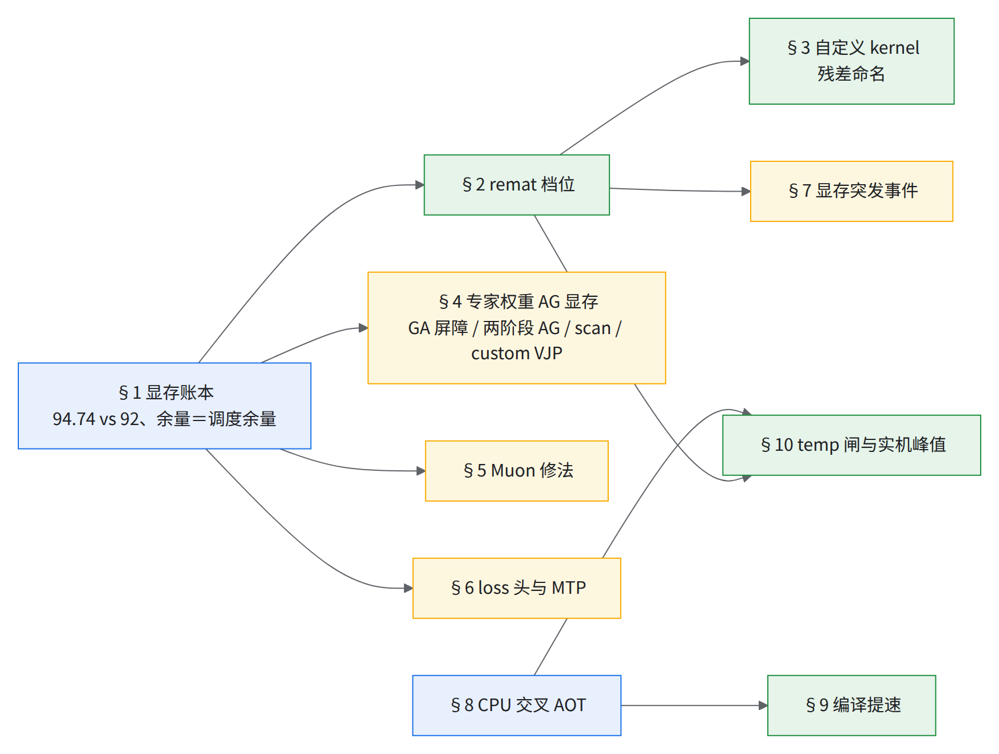
1.显存账本：94.74 GiB 里住着谁
先占后用：通信一发起，接收 buffer 就占上显存，发得越早同时占着的越多。理论账只数正在用的东西，没数这些接收区、碎片和留得太久的临时量；逐项见住户表，机理见本节末动图。
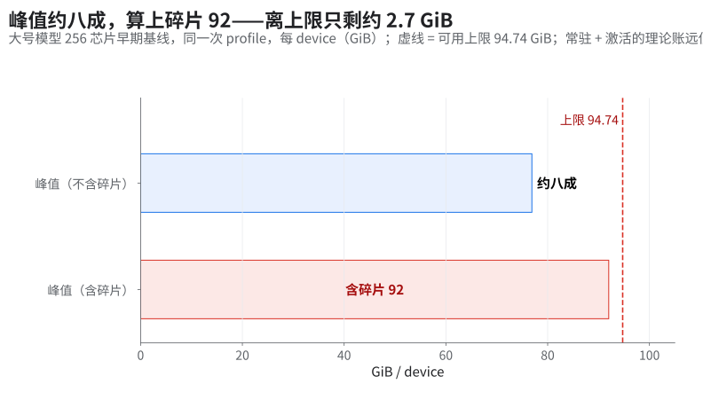
- 每 device 96 GiB HBM（192 GiB ÷ 2，官方 TPU7x 规格表），可用上限 94.74–94.75 GiB。
- 日志「94.74 GB」其实是 GiB（
max_utils除2**30，XLA 也是 1024 进制）。
92 和 94.74 别混：92 GiB 有三种意思
| 数 | 是什么 | 拿来干什么 |
|---|---|---|
| 94.74 GiB | 运行时每 device 可分配的上限：jax.local_devices()[k].memory_stats()["bytes_limit"] 换成 GiB，MaxText 启动日志「Using (GB) x / 94.74」的分母 |
硬上限。实机峰值过了它就 RESOURCE_EXHAUSTED |
| 92 GiB 实测峰值（本章开头） | 一次观测：大号模型早期 BF16 基线（1 片 256 芯片、PDB 2、context 存 device）一次 profile 的实机峰值约占上限八成，算上碎片约 92 GiB（这次 profile 的碎片没单独拆出；下表「4 → 9 GiB」是另一组对照）。和 §10.4 阶梯第 0 级（FP8 满配，含碎片约 80 GiB）不是同一配置 |
不是门，只说明碎片能吃掉多少 |
| 92 GiB placement 准入线 | placement 自己的显存准入上限：96 − 4（4 GiB 是它的显存安全余量配置），比的是它在调度后的显存估算，不是最终 temp，也不是实机峰值（02 §13.2） | 只决定 placement 接不接受一次提前；超了它，那次移动被拒，编译照常通过 |
| 92 GiB 每日 AOT 闸（§7 表） | 试过的每日 AOT 显存检查门槛，量的是编译期 CompiledMemoryStats 的总量（arg + out − alias + temp），未进生产 |
只借判据。总量比 temp 多出输入那一截，所以这个门比「temp ≤ 94.74」严得多，会拦下实机放得下的产物（§10 的 10+ 片 AOT 中间档就超了它，照样跑通） |
新模型用哪个：编译期先用 temp ≤ 94.74 GiB 初筛（§10），终判看实机峰值 ≤ 94.74 GiB。要不要再加一道 92 GiB 的每日 AOT 闸，看你们能不能接受它误拦。
| 住户（大号模型 256 芯片；各行配置见行内） | 大小 / 现象 |
|---|---|
| 常驻（权重 + 梯度 + 优化器）+ 激活（按 remat 策略） | 理论合计远低于上限 |
| 在途通信 buffer | 专家 AG buffer；placement 让同时存活 4 → 7 个（BF16 AOT 上 placement 开 / 关那组对照） |
| 碎片 | 同上那组对照：placement 后约 4 → 9 GiB，高地址留下一大块空洞 |
| 两个 logits buffer | libtpu 0.0.48 把存活期从几百条指令拉到两万多条 → 多占一截 HBM |
| 数千芯片 10+ 片 JIT 基线 | 编译估计 84 GiB/device，约占 90% |
常驻那一项自己怎么估（通用口径，按自己的精度配置改；书里模型的参数量不公开，这里也不代入）
- 常驻 ≈ 参数量 × 每参数字节 ÷（FSDP × CP × EP）；有 TP 切的再 ÷ TP。MaxText 默认切分规则里，非专家权重的 embed 维也切到 context / expert 轴，专家权重则 embed 维切 fsdp / context、专家维切 expert，两类分母一样——不是只有专家那部分 ÷ EP。
- 每参数字节，按「权重 fp32、梯度按
grad_dtype（默认 float32）、优化器状态 fp32」这一常见配置（MaxTextweight_dtype默认 float32，mu_dtype不设时跟随它）：- AdamW：权重 4 ＋ 梯度 4 ＋ 一阶矩 m 4 ＋ 二阶矩 v 4 ＝ 16 B；
- Muon：权重 4 ＋ 梯度 4 ＋ 一个动量 4 ＝ 12 B。MaxText 的 Muon 对没标 Muon 维度的叶子仍走它内带的 Adam（1D / 标量、norm 的 scale、嵌入、输出头；KDA 类模型的
A_log、dt_bias、conv1d也归这边；muon_include_routers=false时路由器同样走 AdamW），这部分按 16 B 算； - 权重存 bf16、或动量降精度时，按实际字节改。
- 常驻再加激活（§2.2）就是上表第一行的「理论账」；要和 94.74 GiB 比，还得留出下面这些账外住户。所以它只作开编前的初筛，终判同 §10。
把握：源码证实（字节数由 dtype 推出） · 出处：MaxText configs/base.yml（weight_dtype、mu_dtype、grad_dtype、logical_axis_rules）、utils/muon_utils.py、optimizers/optimizers.py（opt_type=muon 一支带 adam_* 参数）
HBM 余量 = 调度余量（下图）。有前提：瓶颈得是「显存不够、调度器没法提前发 collective」；成立条件、反例（含本章 §2 的 mlpwi_0/1 变成正收益）和判据（换存法前后比暴露的 RS async-done 等待）见主场 05 §2。
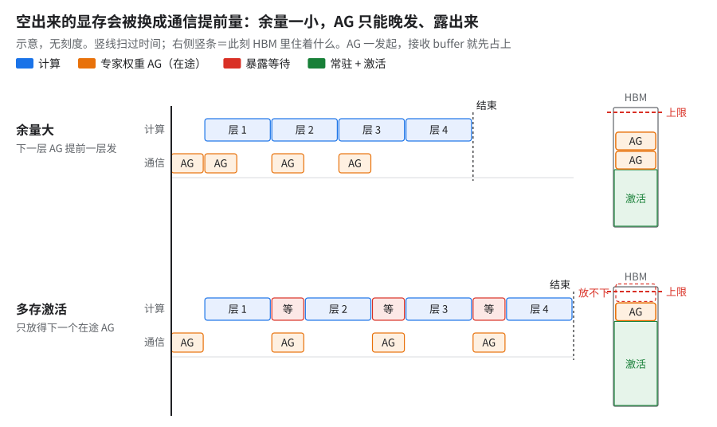
示意。看右侧 HBM 竖条：上行住得下两个在途 AG，下行只放得下一个。为什么：空出来的显存不会闲着，调度器会自动把它换成通信的提前量（上图；实例：
context + kda_residuals上再多存mlpwi_0/1反而变慢，§2）。
- 调度器怎么用显存：开源调度器（LHS）的目标是让计算盖住通信的估计延迟，不是越早越好；显存用量过上限一半后，显存才进入它的打分，把在途窗口往短里推（细节见下方折叠）。
- 多片的硬门：真正卡住提前量的，更可能是 placement 准入线 96 − 4 = 92 GiB（02 §16.2；和 §1 表里那道 92 GiB 每日 AOT 闸数值相同，但不是一回事）[推断]。
- 单片另算：单片 temp 约 93 GB（约 87 GiB），在准入线以下；单片满配下要是提前量也被它卡住，那就得是 placement 自己的估算比 temp 高 [推断]。
- TPU 后端是否用同一份代码、上限怎么设，未公开。
GPU 上相当于：FSDP1 的 forward_prefetch／backward_prefetch 与 limit_all_gathers——PyTorch 让用户手调在途 AG 数，XLA 的调度器按 HBM 余量自动调（类比）。
把握：源码证实 · 出处：openxla/xla
xla/service/latency_hiding_scheduler.cc（开源 XLA；TPU 后端未公开）；PyTorchtorch/distributed/fsdp/fully_sharded_data_parallel.py的参数说明
开源 XLA 调度器的显存策略细节
- 到上限改为「不惜代价先降显存」（
kMemoryPeakOverLimit）。 - 若开了重排（
rerun，开源默认 0），整张排完仍超限就按 0.9 倍上限重排。 - 上限由
GetMemoryLimit给出。
2.remat 档位：哪些中间量存着、哪些重算
前置：§1（余量＝调度余量）。后续：§3（kernel 残差命名是 remat 生效的前提）、§10（每档要记 temp 和实机峰值）。
收益：没有一个固定值，正负随模型和基线变：
| 档位 | 结果 | 口径 |
|---|---|---|
小号模型：context=device kda_residuals=device |
约 −10%（指数 31 → 28）；KDA 残差和 context 各占数 GB | 小号模型 64 芯片，PDB 2，FSDP64 / EP2 |
小号模型 PDB≤2 再加 mlpwi_0/1、MoE 路由索引 |
−6%（指数 20 → 18）；真实峰值 74 GiB，logical 报 112 | 小号模型 64 芯片，PDB 2（这组硬件型号未核实）；PDB > 2 不改默认 |
大号模型 AOT：HLO pass（remat 同为 full） |
指数 73 → 55（和 placement 一起，见 02 §7） | 大号模型 BF16 CI，256 芯片，GBS 1024 / PDB 2 |
| 大号模型 FP8：custom，只打开 MLA Splash 残差放置开关（残差存 device） | 快不到 1% | 大号模型 FP8，256 芯片，PDB 2 |
10+ 片 JIT 基线（数千芯片）：打开 MLA Splash 残差放置开关，MoE 路由索引和 decoder_layer_input 存 device；context、kda_residuals remat |
84 GiB/device（§1） | 大号模型 FP8，10+ 片 × 256 芯片，PDB 2，编译估计 |
怎么考虑的：档位不是「越少 remat 越好」，而是逐键试、只留在当前基线上确实变快的。
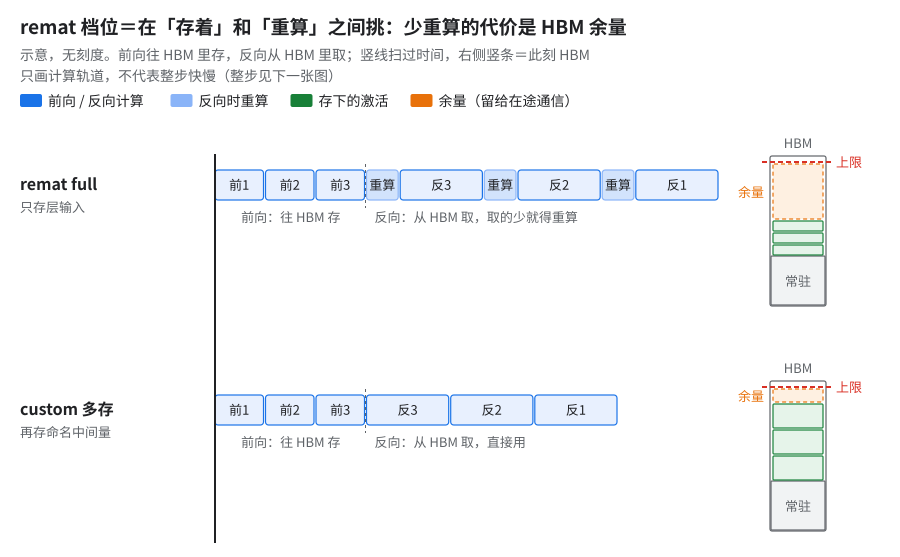
示意。看反向段有没有「重算」块，再看右侧余量格。原理：remat policy 只标记「哪些带名字的中间量允许存」，full 只存层输入；没名字的中间量策略看不见（§3）。
- 上游已有的键：MaxText 有
remat_policy=custom，再给每个带名字的张量单设一个同名键，取device | remat | offload，例如remat_policy=custom context=device decoder_layer_input=device mlpwi_0=device。上游configs/base.yml里有context、decoder_layer_input、mlpwi_0/1、query_proj等键。 - 自定义键（上游没有）：上表的 MLA Splash 残差放置开关和 MoE 路由索引键是这套方案自己加的，需自行实现。残差名
kda_residuals与上游 Tokamax 的 KDA kernel 一致；区别在 kernel 本身：上游那份目前不可用，生产用的 kernel 库不公开，要自己实现（05 §5）。 - 注入方式：remat 策略由启动脚本注入成上面这些配置键。
minimal系列 OOM。mlpwi=offload撞 scan+offload bitcast bug；decoder_layer_input=offload编译崩溃。- 优化器卸 host：搬走的字节约 35% 被 temp 反涨吃回；
JAX_MEMORY_FITTING_LEVEL=O3字节级无变化。口径：多模态版 BF16、10+ 片 DP10+ / FSDP512、PDB 2，CPU AOT。 - 同一组里关掉 latency-hiding scheduler 省一大截：张量没变小，是 logits 和梯度不再同时活着——「显存余量＝调度余量」的反面证据（代价是性能，没测）。
- 激活全卸 host（
minimal_offloaded）比 full 慢约 60%（指数 50 对 31）：小号模型 64 芯片、PDB 2。 - 在
context + kda_residuals上再加mlpwi_0/1存设备，反而慢约 9%（按原始步时、以context + kda_residuals基线折算；05 §2 的指数 28 → 31 是取整后的值，直接相除约 +11%，两处是同一组数）：多存的激活挤掉 RS 的异步余量（机理见 05 §2）；PDB≤2 新基线上又成正收益（上表第 2 行）。 - 开
mlpwiremat 时 GMM 输出必须先 mask 再打checkpoint_name，否则梯度 NaN。 - KDA 17 个残差全存设备：OOM；只存三个局部量（
Aqk/Akk/g_cumsum）就是上表约 −10% 那一档。 --xla_tpu_enable_ag_backward_pipelining=true想降 HBM：小号模型 64 芯片 step 1 起 loss / grad norm 全 NaN，不能用。另一个坑：看 flag 实验先核对实际生效的值（编译日志 /LIBTPU_INIT_ARGS），不信实验标签里写的值——标签与实际传入值可能不一致。
⚠️remat 越少不一定越快：大号模型实测反例大号模型 FP8 256 芯片，
full换成custom (context=device)：重算少约 20%，暴露的 RS 等待涨约 65%，整步慢不到 1%（下图）。两份不同的 cost profile 结果一致，排除 profile 影响。
- 判据：先看暴露的集合通信占比；通信受限时别指望减 remat——省掉的重算本来藏在通信底下，不缩短关键路径，多存的激活还吃掉调度余量。
- 同一组对照里，每个 device 的两颗 SparseCore（每芯片 4 颗、每 device 2 颗，官方 TPU7x 规格）执行时间比从约 3:4 偏成约 6:1（
physical_core_indices放置失衡）：换 remat 会连带改 SC 分工，要一起看。
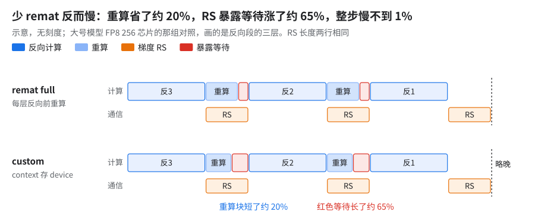
示意。RS 两行等长；看重算变短、红色等待变长。为什么 SC 分工会跟着 remat 偏：通信活按核分派，一次 RS 不拆到两颗核上，RS 的数量和先后一变，活就可能挤到一颗核上，成了尾巴（上框 3:4 → 6:1）。分派规则未公开，「一次 RS 不拆到两颗核上」也是推断；判据：在 xprof 里看同一个 RS 是否同时出现在两条 SC 轨道上。
GPU 上相当于：SC 卸载类似把搬运交给独立的 DMA 引擎／copy engine、不占 SM（NCCL 的 RS 默认以 kernel 形式跑在 SM 上，不算这一类）；这里是两台引擎分活不均（类比，推断）。
把握：推断 · 出处：本节上面 WARN 框的数据
为什么 remat 在 knockout 基线上几乎不省显存：这时峰值贴着上限，remat 省出来的显存马上被调度器花在更早发通信上，峰值不动。
- 推导链：§1 调度器显存策略 → 余量变大 → 提前量变大 → 峰值不变；没比过两份 schedule 的在途 collective 数。对照 §10 两张表的「换 remat full」行与第 9 级（HLO 通信重排和 FP8 已拆）。
- 更简单的解释：temp 只看峰值那一刻活着的 buffer，峰值若落在优化器段或专家 AG buffer 上，
full少存的激活那一刻本来就不在 [推断]。- 判据：用
--xla_dump_to导出两版的 buffer assignment / 显存使用报告，比峰值时刻的活集。把握：推断 · 出处：JAX 文档 Gradient checkpointing（
checkpoint_name、policy）；本章 §10 两张表
2.1 换模型怎么重扫 remat 档位
本章和 05 §2 的 remat 结论换模型、换基线正负都会翻（多存 mlpwi_0/1 在小号先慢后快；大号多存 context 反而 RS 多暴露），所以在新模型上按这个顺序重扫：
- 先
remat_policy=full，保证跑得起来，记下基线。 - 看 profile 里暴露的集合通信占多少。通信受限时别指望靠少 remat 提速（§2 WARN）。
- 给自定义 kernel 的残差命名（§3）：
custom_vjp里的残差要在f_fwd内部打checkpoint_name，否则 remat 策略看不见（05 §2）。GQA 用 Splash attention 时不用自己打：- 上游
layers/attention_op.py的tpu_flash_attention构造 Splash kernel 时传了residual_checkpoint_name="context"，JAX 的 Splash kernel 内部把输出和 logsumexp 都打上这个名字。要存就在 policy 里留context（预设minimal_with_context，或 custom 下context: device）。 - 投影在
layers/attentions.py里另有名字：query_proj／key_proj／value_proj／out_proj；还有 custom 专用的attention_out（attention 输出、out_proj之前），预设档里没有它。 - 怎么验证：每档用
jax.ad_checkpoint.print_saved_residuals列出存下的残差，看有没有名为context的两项。再看编译后 HLO 里 Splash 前向 kernel 出现几次：存下来时反向不该再调一次前向 kernel，不存时会多一次 [推断：按 remat 机制推，没在 Splash 上实测]。
- 上游
- 一次只开一个键，大致从小到大 [推断：各键大小没有逐项实测]：attention 残差 → MoE 路由索引（上游没有这个键；上游相邻键是
moe_routing_maps，存 top-k 专家 id 和排序置换，未测）→decoder_layer_input→ 最后才是mlpwi_0/1。mlpwi最大，也是收益正负翻过的那个。 - 每档记四个数：编译期 temp、实机峰值、步时、暴露的 RS。只留在当前基线上确实变快的。
- 改了 placement / FP8 / PDB 之后重扫：基线一换，同一刀的收益正负可能翻过来。
判断做对了：最终档位相对 full 步时确实下降，实机峰值离 94.74 GiB 还有余量，暴露的 RS 没有明显变长。
2.2 序列拉到 32K：激活怎么估、什么时候开 CP
激活显存的通用估法（每 device，scan 层，BF16 按 2 字节）
- 记 t ＝ 每 device 的 token 数 ＝ PDB × S，L ＝ 层数，D ＝ hidden。
full档：每层只存层输入，约 L × t × D × 2 字节；另加反向时正在重算的那一层的全部中间量（随 t 线性涨）。- 每多存一个键，加 L × 该键大小：
- q／k／v 投影：t × (q 头数 ＋ 2 × kv 头数) × 每头维度 × 2；
context：t × q 头数 × 每头维度 × 2，外加 fp32 的 logsumexp（t × q 头数 × 4）；- 稠密
mlpwi_0／mlpwi_1：各 t × F × 2；路由专家的moe_mlpwi_*：各约 t × top-k × 专家宽 × 2（不计 padding）； - 有 TP 切 hidden 或头时，对应那一维再除以 TP。
- 上面 q／k／v 那行按 GQA 写，MLA 要换量：MLA 先把输入压成低秩 latent 再展开成每头的 q／k／v，所以多出两个带名字的中间量，展开后的每头维度也不一样（键名与形状按源码推，没在 MLA 上逐项量过 [推断]）：
mla_q：q 的 latent，t × q_lora_rank × 2；mla_kv：kv 的 latent，t × kv_lora_rank × 2（kv 压缩时另切出一段各头共享的 rope 维 qk_rope_head_dim，不在mla_kv里）；query_proj／key_proj：t × q 头数 ×（qk_nope_head_dim ＋ qk_rope_head_dim）× 2；value_proj和context：t × q 头数 × v_head_dim × 2（MLA 的 k／v 展开到每个 q 头，没有 kv 头数这一项）；- 这套方案的 MLA Splash 残差放置开关（11 C04）存的是 MLA Splash 的 output 与 logsumexp，大小同上面
context那项； - 套用前用
jax.ad_checkpoint.print_saved_residuals核一遍实际存下的形状。
- 注意力用 Splash 时没有 S² 项；不用 flash 类 kernel 才会有 PDB × 头数 × S² 的打分矩阵，32K 下它先爆。
- loss 头的 t × 词表那一项也随 t 涨，见 §6。
- 8K → 32K 时把 PDB 降到原来的 1/4，t 不变，上面每一项都不变 [推断：公式里只出现 t，没有单独的 S]。所以先降 PDB，不急着开 CP。
- CP 本身不减少 t：PDB 固定时 t ＝ PDB × S 和 CP 无关 [推断：和下面那组「HBM 不变」一致]。CP 的用处是让一个 device 只拿一条序列的一段。
- 上游 PDB < 1 是按 PDB ＝ 1 读数据、只训其中一部分（
configs/types.py的calculate_global_batch_sizes），读进来的有浪费。
什么时候才该开 CP
- 全局 batch 的序列条数少于 device 数，每个 device 分不到一整条序列；或者
- PDB 已经是 1，单层重算时的瞬时峰（随 S 线性涨）还是放不下。
开之前过三道：
- 11 B04 的计数修复在不在；有线性注意力层的，状态跨 rank 传没传（13 §5.1）。
- Splash 的
block_q能不能整除每分片长度（05 tile 扫描规矩第 2 条）。 - CP 收 K/V 的通信在 profile 里能不能藏住。
估算只作初筛，之后同 §10：temp 再筛，实机峰值终判。
书里唯一的 CP 证据，和它的局限
- 来源：11 「试过不行」表：另一个模型、256 device、seq 32k，CP=2 对 CP=1，HBM 不变，步时略慢，结论是「不需要 CP」。
- 局限：
- 单次对照；
- 不是这本书的两个模型；
- 同时撞上 B04 的 GLA（门控线性注意力）状态静默错误，那组的数值本身就不对；
- 只说明 PDB 不变时 CP=2 不省显存，没测「PDB 降不下去」的场景。
2.3 序列变短（如 8K → 4K）：remat 往哪调
书里没在短序列上测过，下面是判据和测法 [推断]。
先分清 S 变短时 t 变不变（t 同 §2.2）
- PDB 加倍、t 不变：§2.2 那些按 t 算的激活项都不变；变的是注意力核心——每 token 的 softmax 注意力乘法随 S 线性缩，MLA 那份计算占比下降，打开 MLA Splash 残差放置开关能省的重算也跟着变少。KDA 每 token 的开销和 S 无关，基本不变。
- PDB 不变、t 减半：激活减半，HBM 多出余量；但 FSDP 下每步搬权重的量和 t 无关，算的时间减半、通信不变，更容易变成通信受限。
- 新基线先跑
remat_policy=full（§2.1 第 1 步），看 profile 里暴露的集合通信占比。 - 暴露通信变大（t 减半时最可能）：多出来的 HBM 先别拿去多存激活，留给 placement／异步 collective 当调度余量（§1）；减 remat 很可能不降反升（§2 WARN）。
- 暴露通信没变、计算是大头：才按 §2.1 第 4 步的顺序逐个多存，每档记四个数。
- 8K 上调好的档位不能直接搬：基线一换同一刀的收益正负可能翻过来（§2.1 第 6 步）；MLA 那刀和 Splash 块参数尤其要重扫（05 §8 的 4K 起点）。
3.自定义 kernel 的残差要显式命名（fused MoE 反向不再重放前向）
前置：§2。后续：§2.1 第 3 步。
收益：未量化（没有修前对照）；trace 里 fused 前向和 fused 反向次数一一对应，没有反向触发的重放；稳态无 OOM、无 hang。
怎么考虑的：fused MoE 前向是 remat 看不透的 custom call，full 下反向要它的中间结果就把整个 fused 前向再跑一遍。
原理：full remat 下只额外保存 route IDs 和 routing weights（Linen / NNX 两套 policy 都覆盖），反向直接跑 fused 反向。
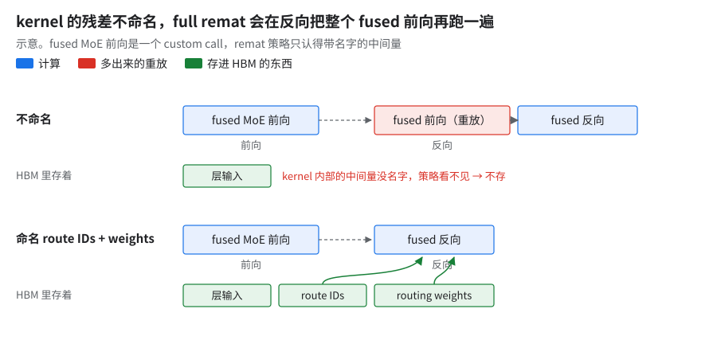
示意。看反向段开头那块前向重放。怎么开：这套方案的 fused MoE 路径里已默认带上（上游 MaxText 的 fused MoE 只在推理侧，vllm_rpa 路径调 tpu-inference 的 kernel，没有这条训练路径）。
坑（通用规则）：自定义 kernel 一碰 remat，要显式命名它的 residual（checkpoint_name / 专门的 remat 键）。不命名，full 会重放整个 kernel，custom 会静默不生效（同类坑见 13 O09）。
4.专家权重 all-gather 占的显存：五种修法
FSDP 下专家权重每层先 AG 再算；这块 buffer 活多久、同时活几份由 XLA 决定，不由模型代码决定。下面五种修法前两种针对 GA > 1，后三种针对一层内 / 跨层的 buffer 寿命。
4.1 GA 循环里的权重外提屏障（默认关）
- 前置：GA > 1，且配逐层 remat（
prevent_cse=True）。大号模型生产是 GA=1，用不上（11 B05）。 - 现象：XLA 的循环不变量外提（LICM）发现专家权重的 AG + concat 每个微批都一样，就提到 GA 循环外整份常驻（下图左）。
- 怎么开：打开防权重 AG 上提开关，用
jax.lax.optimization_barrier给权重注入对循环变量的假依赖。 - 收益：被外提的 concat 缩到原来的一个零头；另一个模型 16 芯片 loss 校验的 OOM 消失。
4.2 同一个问题的梯度侧：dW 的 RS 被挪出 GA 累加（默认关）
- 前置：同 4.1，只在 GA > 1 时有意义。
- 现象：XLA 利用线性（先 RS 再累加 ＝ 先累加再 RS）把专家权重梯度的 RS 移到 GA 累加之外，carry 变成整份未切分，高 GA 下 AOT OOM（下图右）。
- 怎么开：打开防梯度 RS 上提开关，在权重梯度 RS 之后插
optimization_barrier。覆盖 FP8 / QAG 与 BF16 显式 gather 两条路径。 - 收益：让大号模型 BF16 高 GA 配置 AOT 编得过；无步时数据。小号模型 1000 步 loss 校验是 GA=1、开关关着，GA > 1 路径没做数值对拍。
- 坑：
- 静默无效：
shard_exp_on_fsdp=false，或者既没开 QAG 也没开 force gather 时，开关什么都不做、也不报错；两阶段 AG 路径和 megablox 非 Tokamax 分支也不受保护（13 §2.2）。 - 和
use_batch_split_schedule互斥，同开直接报错。
- 静默无效：
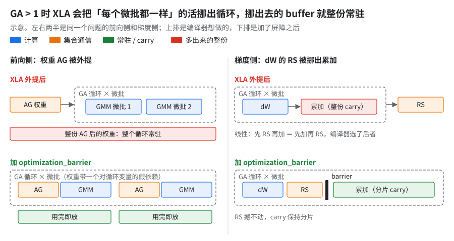
示意。上排编译器外提，下排加屏障；红色整份块是多出来的显存。4.3 两阶段 AG（试过，没留下）
- 怎么开：
moe_fsdp_use_two_stage_all_gather，专家权重 AG 拆两段with_sharding_constraint+optimization_barrier，禁止跨层异步流水 AG。 - 收益（小号模型 64 芯片）：
- GA=1 单开：峰值约 −20%（86 → 67 GiB），但每 device 吞吐约 −15%——AG 不能提前发，全暴露。
- GA=2 配合：吞吐持平、显存约 −20%；PDB 2 + GA=1 配合两阶段 AG 吞吐约 +20%（对照组未记录），峰值贴到 90 GiB 级，可能
RESOURCE_EXHAUSTED（碎片整理重试能救回）。
- 坑：代码和编译器升级后省显存效果基本消失（GA=2 版 70 → 87 GiB），原因未定位到单个改动。判据：「禁止流水」换显存是拿步时付账；效果依赖 XLA 的调度，用之前要在当前版本上复测。
4.4 前缀层改四段 nn.scan（生产配置里有）
- 怎么开：dense 前缀和 MoE 前缀原来是 Python for 循环，改成四个
nn.scan。 - 收益（小号模型 64 芯片）：峰值约 −15%（91 → 77 GiB），步时约 −5%，8 步 loss 一致。拆项是 AG buffer 和 copy buffer 各省一大截，MLA splash 反向 buffer 涨一截。
- 原理：scan 后 XLA 跨迭代复用同一份 AG 后的专家权重 buffer（下图），不是「scan 轴上做了 FSDP」（那条规则映射为空）。
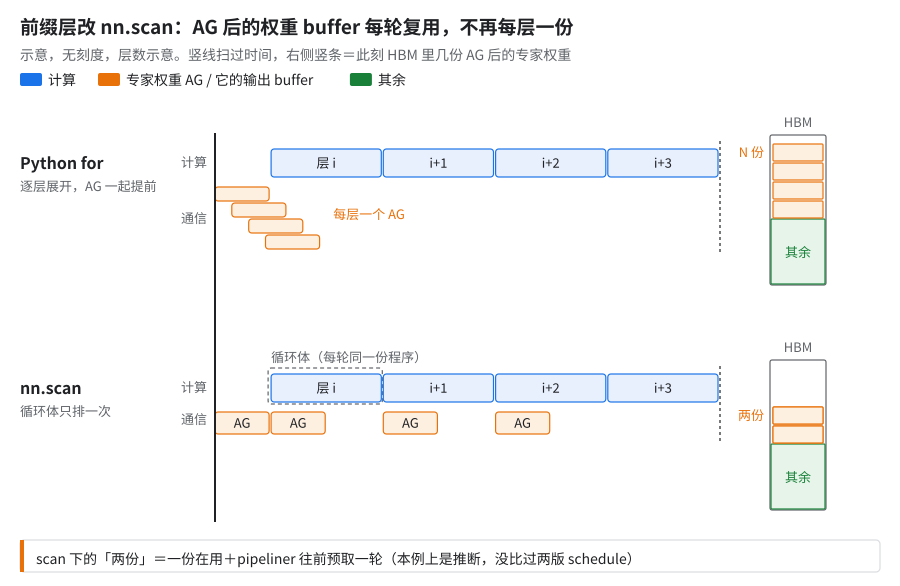
示意。数右侧同时活着的 AG buffer 份数。为什么：循环体只排一次，AG 输出 buffer 只有一份、每轮复用。「复用」是结果，循环边界才是原因：跨层预取最多由 collective pipeliner 往前剥一轮。代价是跨层藏通信的余地变小。在本例上是推断，没比过两版 schedule。
把握：公开资料 · 出处：JAX 文档
jax.lax.scan（「lowered to a single WhileOp」）；openxla/xlaxla/service/collective_pipeliner.h
- 坑：
- 层数如果刚好让 dense 前缀与周期对齐，会静默构造出错的 attention 类型；
- 检查点转换映射要跟着改；
nn.scan(length=1)会被 XLA 当单次 while 内联，scan 结构丢了，调度和显存管理跟着变。所有length=1的 scan 都要包set_xla_metadata(skip-simplify-while-loops_trip-count-one=true)（数值惰性，小号模型 1000 步对拍通过）。
4.5 分片权重直接传进 GMM 的 custom VJP（只有 AOT 验证，未进生产）
- 怎么开：BF16 显式 gather（GMM 内强制权重 gather 开关）原来先 AG 出完整权重再进 GMM，反向残差存完整权重。改成把 FSDP 分片权重传进 megablox GMM 的 custom VJP：残差只存分片，反向算
dlhs前重新 AG，dW 由 TGMM 算完直接 RS 回分片。 - 原理：用一次额外 AG 换掉「整层完整权重从前向活到反向」。
- 收益：大号模型 AOT 峰值明显下降（仅模拟编译）。
- 坑：
- 只有 AOT 数字，没有运行时步时、没有数值验证。
- 开 remat 后每层完整权重 AG 多出一半，而 remat 本已限制权重存活期，省下的显存在真实配置里可能打折。
- 依赖 ICI AG pipelining 的配置。
5.Muon 优化器：数值、编译、通信三类修法
前置：§1（Muon 常驻 12 B/参数）。后续：§7 第一行 JAX 0.11 OOM 的修法在这里；§8 表里的 Muon 编译惩罚。
Muon 的 Newton–Schulz（NS）正交化每步要做几次矩阵乘，本身就是一个小循环。通信那条（NS 前复制矩阵轴，optimizer 段约 −15%）主场在 02 §3。
5.1 数值
| 问题 | 原理 | 修法 / 效果 |
|---|---|---|
| NS 用 bf16 | 每步十来个 GEMM（标准五次多项式 NS 每轮 3 个矩阵乘、5 轮约 15 个），bf16 误差层层累积，对 GPU 参考出现千分之一量级的 loss 漂移 | NS 默认改 fp32（ns_dtype=bfloat16 可选回去）；1000 步 loss 均值差不到万分之一，窗口内无累积漂移。代价是 NS 计算量变大，后面才有编译友好化 |
| MLA 投影在 Muon 按分量切分的配置（split 列表）里填了每头维度 | NS 按 split 分组正交化，填每头维度等于按错的块做正交化，scale 也算错；不报错 | 改成总维度。属静默错误，只有长跑对拍能看出来 |
| 启动脚本里写死的默认值把 NS 换回 bf16 | 一组性能配置里带了把 NS 精度设回 bf16 等三个硬编码默认，对旧基线出现 loss 差 | 删掉后对拍回到不到万分之一；步时慢约 2–3%（小号模型，[推断：跨两次改动对比]）。审性能配置时要逐个核默认值 |
| libtpu 0.0.44.1 → 0.0.47 后 NS 数值变了 | 新版对小 batch 的 Gram dot 换了代码生成窗口，同一 TensorCore 内两个 MXU split-K 后再相加，累加括号变了，经 5 轮 NS 放大；highest 精度下两版一致 |
只把 component-split 外层 jax.vmap 换成 jax.lax.map 即逐位恢复；scan 轴短时开销不到 1%、长时约 15% 到一倍多（单机微基准）；全局替换让路由 MoE 慢 5–8 倍。见表下 |
- libtpu 版本那行：0.0.48 也没消除差异。结论是语义等价但非逐位，靠 loss 门禁兜底（大号模型 256 芯片 20 步 loss 通过）。
5.2 编译
- 编译友好化：NS 迭代默认不展开（loop lowering）、同形叶子分桶批量做（打开 Muon 批量 NS 开关，每批 16 个），HLO 里 dot / while 个数不再随叶子数增长（同形叶子 1 个和 8 个编出来一样多）。收益见 §8 表（无前后实测）。
- Muon NS 展开开关打开后没生效：带按分量切分配置和
scan_axis的参数（如 MLA 投影）递归vmap时漏传了这个开关，仍走 scan。修后小号模型再快不到 1%，是整体打开 Muon NS 展开开关（单项快 1–2%，按小号模型 64 芯片步时折算）的前置。开关类优化要在 HLO 里确认每类参数都走了新路径。 - 分块从 Python for 改
lax.scan：所有块共用一个 NS 体，HLO 指令数大降；但接着撞上下一个坑 ↓ - 同形矩阵 concat 超 int32：scan 版把一大组同形矩阵 concat 成一个 buffer，word offset 超
INT32_MAX→RET_CHECK allocation_size_words <= INT32_MAX。修法：按 2 GB 上限分桶，外层 Python for、内层 scan。全用lax.scan会让 slice-of-concat 折叠失效，所以外层保留 for。 - JAX 0.11 下 NS 被复制到 OOM（§7 表第一行），修法是一条窄保护：
- 只对 CP > 1、且 NS batch 轴复制后工作集超 256 MiB 的叶子不复制、保留原分片，叶子内用
lax.scan按每块 ≤16 个矩阵顺序做 NS；CP=1 时图完全不变。 - 大 Gram 中间量和它引出的 all-to-all 一起消失，小号模型 CP8 编译 heap 降约 60%（§7 的 115 → 44 GiB 是同一思路的另一实现测的）。
- 未进生产，修改后没再长跑。
- 只对 CP > 1、且 NS batch 轴复制后工作集超 256 MiB 的叶子不复制、保留原分片，叶子内用
批量做的显存方向（§10 两张表第 10 级与「关 Muon 批量」行）：Muon 批量在阶梯和 knockout 两种拆法里显存方向相反，步时同号（09 §4.9）。「批量」＝把同形矩阵拼成一批一起做 Newton-Schulz 正交化。
为什么：批量做和逐个做各有一股抬峰的力，哪股赢看峰值落在哪段。整组同形矩阵拼起来做，整组中间量同时活着，会抬峰；逐叶子做时调度器把很多叶子交错并发，在途中间量反而更多。哪股赢看峰值落在哪段：两级的峰值若落在不同段，批量的中间量只在其中一级碰上峰值时刻 [推断]。换配置要重看峰值位置；没逐级找过峰值指令，判据同 §2 末框，比两版峰值时刻的活集。
把握：推断 · 出处：本章 §10 两张表；Muon 批量实现见本节
5.3 通信（细节见 02）
- NS 前把矩阵轴复制、batch 轴留在 FSDP 上，NS 循环里纯本地矩阵乘；带一个 1 GB 的复制预算，自动限 batch 防 OOM。
- 还要处理三种边界：rank-2 参数在
vmap下仍逐步 all-reduce、不兼容 batch 轴的回退成全复制、auto-cap 没对齐 FSDP 轴倍数导致 padding OOM。
6.loss 头和 MTP 的省显存改动
前置：§1。后续：§2.2（t × 词表那一项）。
⚠️「省显存」改动的估算经常对不上整数 label CE 实测反涨，vocab tiling 只省一小截还带梯度 bug。动手前先在 HLO 里确认那个张量真的存在。
| 尝试 | 做了什么 | 结果 | 为什么 / 坑 |
|---|---|---|---|
| 整数标签 CE（MTP loss） | dense one-hot 交叉熵改成 logsumexp − target_logit |
大号模型 AOT 编译期总显存涨不到 1%；小号模型 64 芯片运行时峰值涨不到 1%（几乎全在 reserved，heap 高水位不变），步时快不到 1%：无收益，未进生产（两组成对实测，只差这一处代码） | one-hot 本来就不物化，没东西可省（见表下） |
| one-hot 改 bf16 构造 | 主 loss、MTP、vocab tiling 四处 one-hot targets 用 bf16 建 | 估算省一截（主 loss 与 MTP 各一半）；离线 loss / grad array_equal 逐位一致；未进生产 |
依赖 cast_logits_to_fp32=true 才逐位一致；走 bf16 logits 时累加会降成 bf16 |
| MTP 也做 vocab tiling | MTP 词表分块键设为 8，MTP 输出投影 + CE 分块，避免物化整个 [batch, seq, vocab] |
实测峰值没变，未进生产 | 主 loss 的 vocab tiling 也只省 1–2% HBM |
| MTP scan + 分块 CE | MTP 参数沿 scan 轴堆叠、每次只 AG 一层；CE 用 lax.scan + remat 按 2048 token 分块 |
小号模型 64 芯片省一大截峰值、步时慢 1–2%；不分块代价略小（也在 1–2% 档），但显存回到原样 | 拿步时换显存，余量够就不用开 |
为什么整数标签 CE 没收益：one-hot 本来就不落地，没东西可省。
- one-hot 不落 HBM：直觉以为它会落一个 [t, V] 张量。其实 JAX 的 one-hot 是「标签 == iota」的比较，会和乘、求和融合在一起 [推断：融合是 XLA 行为，源码只证实它是比较，本例 HLO 未查]。
- 整数标签版涨的是零头：取 target logit 用 gather，它的反向在源码里是往全零 buffer 里 scatter-add；但实测多出的量远小于一整块 [t, V]（上表）。
- 两种可能 [推断]：一是那块 buffer 也被融合掉了；二是 scatter 融不进下游的逐元素运算，全零 buffer 确实落了 HBM，只是不和峰值同时存活，所以峰值几乎不动。
- 判据：看 HLO 里有没有一个单独的 scatter 输出 [t, V]，有就是后者。
把握：源码证实 · 出处：JAX
jax/_src/nn/functions.py::one_hot、jax/_src/lax/slicing.py::_gather_transpose_fancy；两个比例出自成对实测（见上表）
两个静默算错，都是「loss 看着正常」
- Flax
sow默认是 APPEND：MTP 改 scan 后用self.sow("mtp_losses")收 loss，从检查点恢复时旧条目还在，新旧一平均，MTP loss 被对半除；没恢复的 run 则 raw MTP loss 乱跳（出现过负几十）。修法：sow显式改成 REPLACE（init_fn=()、reduce_fn=lambda c, v: (v,)）。修后 500 步对 GPU 参考 MTP loss 中位差不到千分之一。 - vocab tiling 的自定义反向漏乘 cotangent，默认
num_vocab_tiling: 1所以生产里潜伏着，一开 tiling 就炸：- 机理：
_chunked_cross_entropy_loss_bwd只给参数梯度乘了loss_cotangent，hidden state 梯度没乘，上游梯度放大约total_weights倍（raw_grad_norm到几十万量级，正确值不到 1）。 - 修法一行：
grad_reshaped_hidden_states * loss_cotangent。 - 防法：自定义 VJP 都要拿
jax.test_util.check_grads或对未分块版本比一次梯度。
- 机理：
7.显存突然爆了：成因与修法
| 场景 | 现象 | 根因 | 修法 |
|---|---|---|---|
| JAX 0.11 升级 | 小号模型 CP=4/8/16 OOM：111 / 115 / 111 GiB | 新 partitioner 为 Muon P("fsdp",None,None) 做 all-to-all，Gram 中间量一起活着（下图） |
leaf-only A2A（§5.2） |
| 同上，修后 | CP8：heap 115 → 44 GiB；步时约 −45%（对 JAX 0.10 配置） | ||
| libtpu 0.0.48 | 静态 heap 多占一截 | logits 存活期拉长；产物大小约翻倍 | 未修；同时步时约 −15%，因果未证 |
| DCN DP | 大号模型 DP2 超出 HBM 上限 | AG 分解成更大的 AR 输入 + collective pipeliner（上游 pass） | XLA_FLAGS=--xla_disable_hlo_passes=all_gather_decomposer,collective-pipeliner-forward（单片 +3%） |
| FP8 + 较小多片配置 | 临时量 ≈ BF16 的 2.1× | 同上路径 | 同上（10+ 片 JIT 基线对 FP8 也强制开） |
| scoped VMEM 设 48 MiB | 64 芯片略快（幅度很小），128 芯片 256K CP8 即 E0200 core halt | 误编译 jit_initialize_state |
删；公共值 65536 |
| KDA 256K CP8 | scoped SMEM 2,109,440 > 1,048,576 B | custom VJP 传了整张 chunk_indices |
kernel 库新版的紧凑元数据（SMEM 只预取 O(序列) 边界表） |
| 多模态版 10+ 片 | BF16 106 / FP8 105 GiB > 92 GiB 每日 AOT 闸 | logits buffer 在 MoE 反向期间一直活着 | 关 LHS 79 GiB（性能未测） |
| 多模态版 FP8 上卡（2 片 512 芯片 AOT 作业） | 三次尝试都 RESOURCE_EXHAUSTED：Attempting to allocate 1.39G … 1.38G free，差约 10 MB [推断：日志两位小数，实际差 0–20 MB] |
未核；运行时加了 single_sparse_core_for_reduce_scatter_offload=true（04 §10） |
未解决 |
- JAX 0.11：小号模型 64 芯片 / 128 device，GBS 256、PDB 2、seq 8192；修前基线是 CP8 + JAX 0.10 配置的中位数。
- libtpu 0.0.48：大号模型 FP8、FSDP512、PDB 2、CPU AOT、HLO 通信重排关、未加载 cost profile；步时是大号模型 FP8 256 芯片 20 步、只跑一次、标「待复测」。
- DCN DP：大号模型 DP2 × FSDP256、PDB 2、remat full；超限的是 seq 8K，seq 6K 能跑。
- FP8 + 较小多片配置：大号模型比 10+ 片小的另一个多片配置（每片仍是 FSDP512）、HLO 通信重排关。
- scoped VMEM / KDA SMEM：小号模型 256K 长上下文 CP8。
- 多模态版：10+ 片 DP10+ / FSDP512、PDB 2、CPU AOT。
为什么 0.0.48 那行显存涨、步时降：两块 logits buffer 唯一的晚期用户（输出投影的 dW）被挪到反向尾部去填通信空档（下图）。dW 位置是编译产物证实的；「约 −15% 来自这里」是推断，0.0.48 还有别的改动。GPU 上相当于 Zero Bubble 把权重梯度推后填空泡（类比）。
把握：推断 · 出处：0.0.48 编译产物（dW 位置）；arXiv 2401.10241
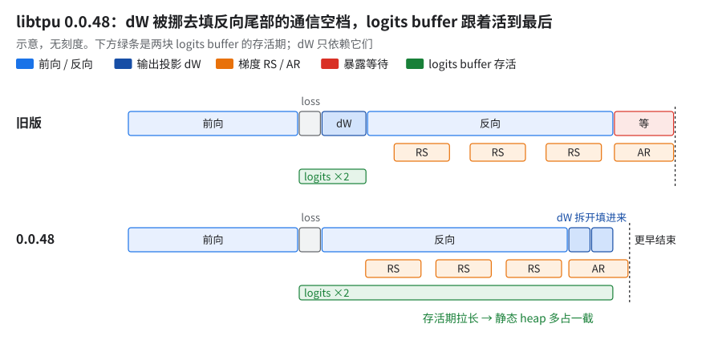
示意。比两行底下的绿条长度：存活期一长，静态 heap 就多占一截。scoped VMEM 那行（VMEM ＝ kernel 用的片上暂存；类比 GPU 的 shared memory，容量和作用域不同）。
- 机制：公开文档未说明（参见 OpenXLA XLA Flags Guidance 的
xla_tpu_scoped_vmem_limit_kib、MaxTextbenchmarks/xla_flags_library.py注释）。它们只说它定「每个 op 本地可用的 VMEM 草稿区」、剩下的留给后续 op 预取；调小为什么把初始化编错、导致 core halt，只有现象。 - 判据：改这个值后，先在最长上下文、最大 CP 的配置上跑过初始化和前几步再推广（64 芯片上小赚，256K CP8 上 core halt）。
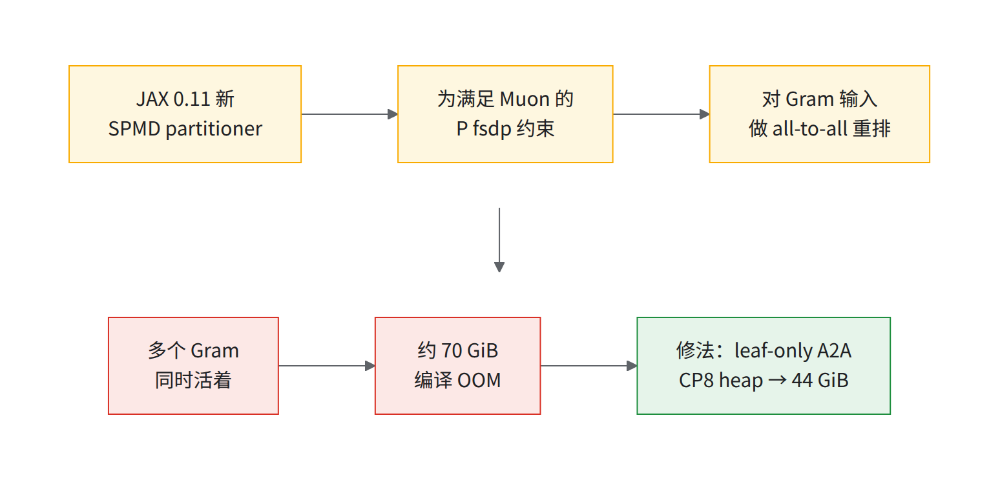
图里三个数口径不同，别互相比：约 70 GiB 只是同时活着的那批 Gram 中间量的合计；表里 111–115 GiB 是整个 heap 的编译需求（超上限所以 OOM）；44 GiB 是修后 CP8 整个 heap。
8.编译挪到 CPU 上：交叉 AOT
前置：无硬依赖（但 HLO 通信重排的生产数都走这条路，见 02 §16.1 的 KEY 框）；§8.2 表里 Muon 编译惩罚那行的修法在 §5.2。后续：§9 编译提速、§10 编完怎么判。
收益：多片首步从 40–46 min 降到 7–8 min（去排队；2 / 8 / 16 片），每次故障重启（07 §6）都省这半小时。
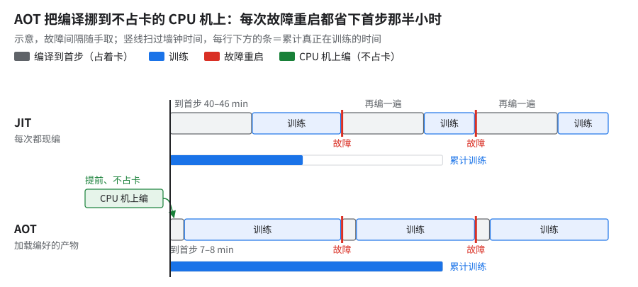
示意，故障间隔随手取。比两行下方的累计训练条。怎么考虑的：数千芯片 JIT 光到 step 0 就约 42 min（大头在 Python），placement 搜索又要几十分钟。编译挪到 CPU 机上，产物存 GCS，TPU 作业直接加载。
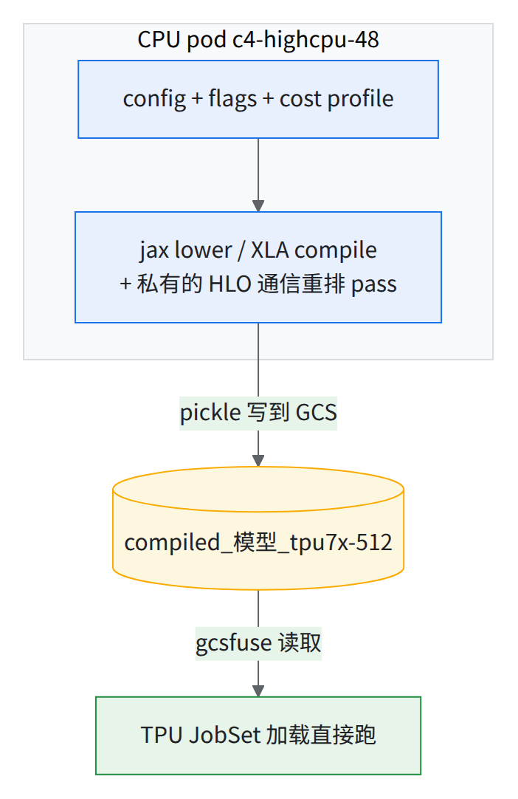
原理：
为什么：AOT 能开更多变换，不是编译器看得更全，是把几小时的编译挪到了不占卡的地方。JAX 把 lower → compile → 序列化拆开，placement 搜索就能离线做、反复换 cost profile。所以同样关 HLO 通信重排两边只差不到 1%（§8.1）。JAX 文档只写了 lower / compile 分阶段，CPU 交叉编译和序列化是本书的做法。
把握：推断 · 出处：JAX 文档 Ahead-of-time lowering and compilation；本章 §8.1 的数据
怎么开 / 怎么复现：流程见 11 A01（上游 MaxText 已有编译产物的写入和加载：train_compile 用 compiled_trainstep_file 写出，train 用同一个键加载。这套方案自己做的是 CPU 节点池上的交叉编译流程和 CI 衔接；配置指纹有设计、没进生产，见 §8.3）。
8.1 JIT 还是 AOT：先选路
- 两条路的步时差主要差在 HLO 通信重排开没开，不是编译方式本身：生产和 CI 只在 AOT 开 HLO 通信重排（pass 本身 JIT 也能跑，见 02 §16.1）。
- 证据：AOT 关 HLO 通信重排指数 51（09 §2 的 HLO 通信重排关那行），和下表 JIT 真数据指数 52 差不到 1% [推断：相除；两边都是 HLO 通信重排关、1 片，其余配置未逐项对齐]。
- 别拿 03 常引的单片 JIT 指数 51 来比：那是合成数据、用 10+ 片 JIT 基线配置跑的单片对照，不是同口径（09 §6 JIT 对照：真实数据比合成数据慢 1–2%）。
| JIT | AOT | |
|---|---|---|
| 1 片 4x8x8 步时 | 指数 52（长跑取稳态 p50；HLO 通信重排关） | 指数 37（复现生产 CI 配方；HLO 通信重排开） |
| 提交到第 0 步 | 约 1 h（含加载几百个数据集） | 约 6 min |
| 前期代价 | 无 | CPU 编译提速前 1 片约 1.8–2.1 h、多片约 2–3.5 h，提速后约 17 min（§9）；每个「拓扑 × 片数 × 配置」一份，和代码、cost profile 绑死 |
| 什么时候用 | 改了配置 / 代码 / 片数想马上跑；对 CI 的 loss | 配置定了量生产步时；同一配置反复跑 |
- JIT 验 loss，AOT 量性能：两者逐步 loss 差在 1e-5 量级，和同配置自己两次之间同级 [推断：HLO 通信重排主要改调度和通信切法，不改模型数学]。
8.2 编译耗时的几个数
| 数字 | 值 |
|---|---|
| 大号模型 BF16 tpu7x-512 AOT 耗时 | c4-highcpu-48 约 66 min（c3d 约 94 min，n2d 约 113 min） |
| 持久化编译缓存 | 小号模型冷编译约 5 min vs 热缓存约 1 min（约 −80%） |
| 数千芯片 JIT（10+ 片 JIT 基线） | jax.devices() → step 0 结束约 42 min = 第 1 次编译约 22 + 再编一遍约 18 + 到 step 0 完成约 1 min；日志自报的编译时间只是后面那约 18 min；大头在 Python（见表下） |
| 增量 AOT（原型，未进生产） | 冷约 60 min → 热约 8 min；换 cost profile 仍要约 40 min |
| scan vs unscan（tiny，4 芯片） | 编译+step0 57 vs 74 s；稳态 unscan 快约 4%；「≈130 步回本」 |
| Muon 编译友好化（§5.2） | 去掉约 20 分钟编译惩罚和 BACKEND_PASSES 崩溃；另：打开 Muon NS 展开开关，单项快 1–2% |
| 20+ 片 AOT | 编译配置清单只改编译拓扑的片数与 dcn_data_parallelism 两项；搜索约 53 min；cost profile 仍是 10+ 片那份 trace |
| DCN all-reduce 外提版 10+ 片 AOT | 把层循环里的 DCN all-reduce 外提到循环外，并换成精简的 cost profile；搜索约 62 min；cost model 估层循环和跨片桥接段都明显缩短（只是估算）；只跑过短程（指数 45），没进生产 |
| 启动加速镜像（10+ 片） | 稳态 p50 指数 45；启动快了多少无数据 |
- AOT 耗时：大号模型 BF16，
tpu7x-512＝ 512 device ＝ 256 芯片（切片名按 device 数），同一份代码三种 CPU 机型。 - 持久化编译缓存：小号模型 64 芯片。
- 数千芯片 JIT：大号模型 FP8 JIT 基线，10+ 片 × 256 芯片，PDB 2。每次编译大头在 Python：在 1 个 cube 上测得 trace 约 3 + lowering 约 12 min，XLA 约 2 min。
- 增量 AOT：大号模型 FP8 256 芯片 20 步 CI（原型，未进生产）。
- scan vs unscan：微型模型 4 芯片，900 步。
- Muon NS 展开开关：小号模型 64 芯片、PDB 2、单 pool 钉死。
8.3 坑
⛔AOT 与运行时对不上：都能干净加载然后静默跑错
- AOT 带
--xla_tpu_num_sparse_cores_for_gather_offloading=1等 flag，JobSet 没有LIBTPU_INIT_ARGS。- AOT 验证开了 HLO pass，训练脚本不用。
- pickle 名只编码模型、拓扑，remat / Muon 不同照样加载。
- AOT 静默编出 BF16、选成 JAX 参考 kernel（慢 2–3%；大号模型 FP8 256 芯片、GBS 1024、20 步）。
- 配置指纹（pickle 名加配置 hash、旁挂 fingerprint 文件、加载时 assert）有设计，没进生产。上线前自己比对：AOT 时叠加的配置覆盖文件（overlay）和 flags 算一个 hash 写进产物旁，训练侧加载前重算一遍对上再跑。学习率曲线、步数这类配置是烘在 HLO 里的，对不上时训练跑的是编译时的配置。
AOT 加载两个坑（细节见 11 A01）：
- GA > 1 时
params_shardings算成None（报Expected dict, got None）：上游 maxtext#3872 已修，用maybe_update_params_sharding_with_opt算。 load_compiled必须包在jax.set_mesh里，否则 Muon 报… requires an active mesh context（来自 NS 矩阵复制开关）。
版本钉死：生产版本 jax 0.11.0 / libtpu 0.0.48；升 jax 或 libtpu 都要重量显存和数值。
副作用：0.0.47 改 batched-dot 数值（NS 最大差千分之几，§5.1）；jax 0.11.1 BF16 谱范数失败；0.0.48 在 2x4x4 AG 带宽减半。
9.编译提速：两小时到二十分钟以内
前置：§8、02 §7（改形状要多编一遍）。后续：AOT 迭代周期（改一刀到上卡）从小时级降到二十分钟以内。
收益：一次 HLO 通信重排全开的 CPU 编译 约 2 h → 约 17 min，产物逐字节不变。
怎么考虑的：placement 搜索看着最贵，其实只占十几分钟；大头是两遍 Python trace + lowering（同 §8.2 表 数千芯片 JIT 那行口径）。所以先砍 Python。
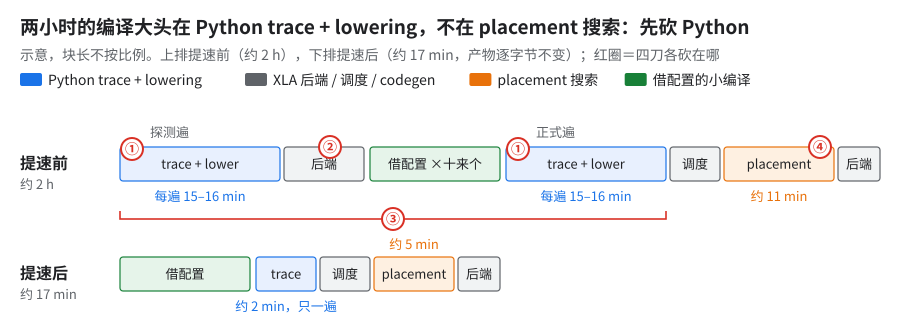
示意，块长不按比例。红圈编号对应下表四刀。三刀 + 一刀：
| 刀 | 原理 | 效果 |
|---|---|---|
① 反向 MoE kernel 里给空专家清零的 Python 循环改成 fori_loop |
Python 循环 trace 时展开成大量指令 | 每遍约 15–16 → 约 2 min，一刀省约 28 min |
| ② 探测那遍拿到形状清单就停 | 那遍只为知道要借哪些后端配置（02 §7） | 省掉一遍后端编译 |
| ③ 两遍 trace + lower 合成一遍（单遍优化） | 探测并进正式那遍编译里做 | 再省约 2 min（约 10%，96 核独占整机） |
| ④ placement 搜索并行 | 调度后重排（02 §7）里的搜索分支并行跑 | 约 11 → 5 min（约一半，46 核调试 pod，单次）；模块逐字节相同。是编译时间，不是训练提速 |
- 持久化编译缓存对探测那遍无效：命中缓存会跳过编译，探测就拿不到东西（02 §7）。
- JIT 首步编两遍（step 0 输入 sharding 与
lower()不一致），每遍 trace + lowering 约 15 min（profile 指向 megabloxtgmm_v2和 Pallas Mosaic lowering）；这两处没有验证过的修法（§11 第 5 条）。
10.编译期 temp 与实机峰值：编得过不等于放得下
前置：§8；§2。后续：每次换 remat / 拆 pass / 换片数都要过这道。
10.1 编完先看 HBM 闸：要记余量，不只记过没过
- 判据是编译日志
Memory analysis行的temp_size_in_bytes，≤ 94.74 GiB 才放得下：
grep -o ', temp_size_in_bytes=[0-9]*' compile.log | awk -F= '{printf "temp %.2f GiB (limit 94.74)\n", $2/2^30}'
- grep 要带前面的
,：同一行有host_temp_size_in_bytes=0，不带逗号再tail -1取到 0，闸永远「通过」。 - 编得过 ≠ 上卡放得下：有份 AOT 产物上卡差约 10 MB OOM（§7）。每份产物同时报 temp 和离上限的余量；余量不到约 1 GiB 的，先在 1 片上真跑一次再上大规模 [推断：1 GiB 是经验线，没系统测过]。
- temp 也不是上界（10.3 的 24 份对照）：真 OOM 以运行时
peakBytesInUse/RESOURCE_EXHAUSTED为准，1 GiB 余量线挡不住 temp 偏低的那几个。
10.2 实测：每拆一刀，编译期 temp 和编译时间怎么变
knockout 基线（第 1 级，满配只关 pipeliner）temp 约 93 GB，即约 87 GiB；单片上 pipeliner 开 / 关的 temp 几乎相同（第 0、1 级都约 93 GB）。下表统一用 GB。口径：
temp_size_in_bytes取编译日志里最大那条（不含参数和优化器状态）；GB = 10⁹ B，与 09 同口径。- 编译时间取作业墙钟（分钟），几十个作业并发，只看量级。
- temp 列填「—」的格不给原值，方向和幅度只看「相对」那一列。
| 级 | 在上一级基础上再拆 | temp（GB） | 相对上一级 | 编译墙钟 |
|---|---|---|---|---|
| 0 | 满配（指数 37，pipeliner 开） | 93 | — | 未记 |
| 1 | XLA pipeliner | 93 | 不到 1 | 125 min |
| 2 | fusion 行为标注 pass | 93 | 0（逐字节相同） | 153 min |
| 3 | placement pass | — | 明显降 | 130 min |
| 4 | two-stage RS pass | — | 不到 1（降） | 68 min |
| 5 | 小 RS 合并（HLO 通信重排全关） | — | 不到 1（升） | 63 min |
| 6 | FP8 absmax QAG | — | 略升 | 64 min |
| 7 | 整个 FP8 → BF16 | 78 | 明显降 | 43 min |
| 8 | SC 非对称循环 | 78 | 0 | 44 min |
| 9 | MLA residual 存设备 → remat_policy=full |
— | 明显降 | 45 min |
| 10 | Muon 批量 Newton-Schulz | — | 明显升 | 64 min |
| 11 | SC reduce-scatter v2 / ND / padding | — | 多占一大截 | 65 min |
| — | GMM v2 → v1 | CPU 上编不了 | 半分钟即报错 | |
| 12 | Splash block / layout | — | −2 | 66 min |
| 13 | MoE GMM tile | SMEM 溢出，编不过 | 125 min 后报错 |
knockout（knockout 基线只关一项，相对第 1 级）：
| knockout | temp（GB） | 相对第 1 级 | 编译墙钟 |
|---|---|---|---|
| 关 placement | — | 明显降（和第 3 级逐字节相同） | 131 min |
| 关 two-stage RS pass | 90 | −3 | 95 min |
| 关小 RS 合并 | 100 | +7 | 159 min |
| 关反向 while 流水开关 | 92 | −1 | 137 min |
| 关 placement 内 ICI 重搜 | 93 | 不到 1（降） | 152 min |
| 关 placement 搜索 | — | 省一截 | 147 min |
| 关 QAG | 超上限 | 多占一大截 | 168 min |
| FP8 → BF16 | — | 多占一截 | 125 min |
| 关 SC 非对称循环 | 93 | 0（逐字节相同） | 153 min |
| 换 remat full | 93 | 不到 1（降） | 157 min |
| 关 Muon 批量 | — | 省一截 | 192 min |
| 关 SC RS v2 | — | 多占一截 | 156 min |
| GMM v2 → v1 | — | 多占一截（最紧，仍在上限内） | 106 min |
一句话看 knockout：关掉 QAG、SC RS v2、小 RS 合并、GMM v2 会多占（关 FP8 也多占一点）；关掉 placement、placement 搜索、Muon 批量、two-stage RS pass 会省；其余几项基本不动。（阶梯第 7 级换 BF16 时 QAG 和 HLO 通信重排已经拆掉，起点不同，所以方向和 knockout 相反。）
- 小 RS 合并关掉反而多占：合批把几百个小缓冲并成几十个。
- remat 在 knockout 基线上几乎不省、Muon 批量两种拆法方向相反：机理分别见 §2 末框、§5.2 末框。
📊编译墙钟HLO 通信重排全开 2–3 h（几个 pass 里 placement 最贵；但整段编译的大头是 Python trace + lowering，见 §9），全关约 1 h，BF16 约 43 min。
10.3 只关 QAG 超上限却跑通：编译期 temp 高估
- XProf 实机峰值 89 GiB，temp 高估一截（09 §3.2 knockout）。
- 10+ 片 AOT 中间档同样：temp 99 GiB，实机峰值 91 GiB，差 8 GiB。
- 24 份程序（21 个不同程序，3 份与别的逐字节相同）逐一对照，实机峰值 − temp 在 −8 到 +4 GiB 之间，中位 −3 GiB：17 个低于、4 个高于（高零点几到 4 GiB）。temp 不是硬判据也不是上界。
- 实机峰值含一截各程序几乎一样的常驻，temp 不含，所以差值不是单纯「高估」；从哪来未确认（xplane 也不含第 0 步和加载期）。
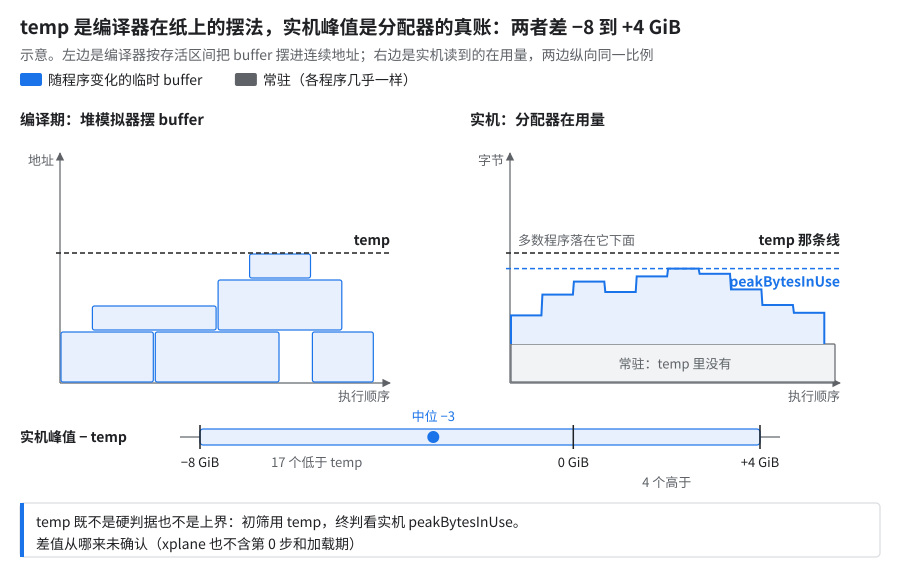
示意。左边看堆模拟器怎么摆 buffer，右边看常驻那截 temp 里没有。为什么：temp 量的是编译器在纸上的摆法（上图左），不是实机分配器的真实峰值。JAX 官方对这个内存分析接口的说法就是「very limited guarantees」。
把握：文档证实 · 出处：openxla/xla
xla/service/buffer_assignment.cc、heap_simulator；JAX 文档 Ahead-of-time lowering and compilation（memory_analysis()）
10.4 实机峰值怎么量
- 开 profiler 跑几步，用 XProf 的 memory_profile 读
peakStats里的peakBytesInUse，各 device 取中位。device 0 常偏高，例如 10+ 片 AOT 中间档是 92 vs 其余 91 GiB（03）。 - 第 0 步和加载期不在 xplane 里，要另看（例如第 0 步后读一次
memory_stats()）。 - 不开 profiler 时，每 N 步读一次
jax.local_devices()[k].memory_stats()，取peak_bytes_in_use（上游 MaxText 读的就是它，XLA 从不重置的高水位）。 - 参照：阶梯第 0 级（大号模型 FP8、1 片 256 芯片、PDB 2、指数 37）在 XProf memory viewer 里的 HBM 峰值约 76 GiB（含碎片约 80 GiB）。§1 表里「含碎片约 92 GiB」是早期 BF16 基线那次 profile，不是同一配置。
11.还没解决的
- 0.0.48 的显存与速度是否一笔交易，只跑单次（口径见 §7）；复测 A/B 只在微型多模态版 4 芯片上起过。
- 多模态版 10+ 片只有关 LHS 能过；多模态版 FP8 在 2 片上差约 10 MB OOM（§7）。
- HLO placement 的碎片没有正式修法（大号模型 BF16 AOT 256 芯片，指数 55 的配置）；把反向 AG 流水做成 HLO pass 的实现，在完整层数上 OOM（单片 4×8×8；同一改动在 4×4×4 小配置上能过）。
- MoE 路由索引存不存 device 未定：大号模型 FP8 256 芯片上两边的数都只差不到 1%，在单次波动以内（PDB 未记录）。device 那边只有 profile 证据，remat 那边只有一次端到端对比，还混着别的配置改动，都不能当胜负。生产配置和 10+ 片 JIT 基线都用 device。怎么按自己的 HBM 余量取舍、怎么测见 05 §7.5。
- AOT/运行时指纹没落地（§8.3）；JIT 首步编两遍、每遍 trace + lowering 约 15 min（§9 坑），两处修法都没验证。
这五件有个共同点：很多修法是拿显存换调度（多留几块缓冲，通信才叠得进计算），显存一紧最先被砍的就是这些缓冲；而验证大多只跑过一次，且常在小配置上。
考考自己
max_utils 打印「Total memory size 112 GB」（量级），而 v7x 每 device 只有 94.74 GiB，作业却正常跑着。矛盾吗？
答：不矛盾。logical 数不计 buffer 复用；同配置 XProf 峰值约 74 GiB。看 memory-usage report 或 XProf。